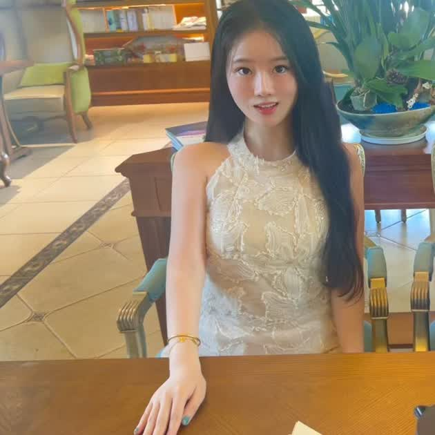

开放研究课题
TGT TALENT PARTNER · BEIJING
冯晓晴 Sherry Feng
京东科技 & 探索研究院
TGT 招聘负责人
寻找那些愿意把好奇心变成技术突破的人。连接顶尖青年人才与京东前沿 AI 研究机会，一起探索智能的下一站。
TECH
GENIUS
GENIUS
TALENT
PARTNER
PARTNER

JD
Technology
& JoyAI
TECH GENIUS TEAM✦
FOUNDATION MODELS✦
EMBODIED AI✦
MULTIMODAL AI✦
AI INFRA✦
TECH GENIUS TEAM✦
FOUNDATION MODELS✦
EMBODIED AI✦
MULTIMODAL AI✦
AI INFRA✦
01 — WHAT I DO
让顶尖人才与
前沿问题 相遇。
TGT（Tech Genius Team）聚焦高潜力青年技术人才。我的工作，是让每一位真正热爱技术的人找到适合自己的研究课题、导师与成长空间。
了解 TGT 计划 →核心团队
技术可能性
02 — NEXT MOVE